Rotational Symmetry
Rotational Symmetry
A shape has Rotational Symmetry when it still looks exactly the same after some rotation less than one full turn.
As we go all the way around once (a full turn), we can count how many times it matches itself. This number is called the Order of rotational symmetry.
Rotational Symmetry
Order 2
Rotational Symmetry
Order 3
Examples of Different Rotational Symmetry Order
Think of propeller blades (like below). When we turn the propeller around its center, it keeps looking the same again and again.
| Order | Example Shape | Artwork using Symmetry Artist |
|---|---|---|
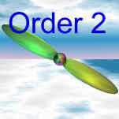 |
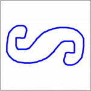 |
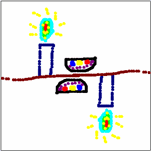 |
 |
 |
 |
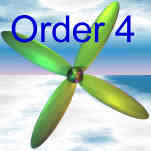 |
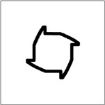 |
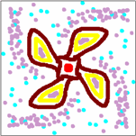 |
| ... and there's also Order 5, 6, 7, and ... | ||
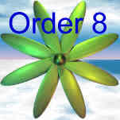 |
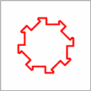 |
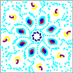 |
| ... and Orders 9, 10, and so on. | ||
Try rotational symmetry yourself with Symmetry Artist ... !
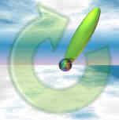
Is there Rotational Symmetry of Order 1 ?
Not really! If a shape only matches itself once as we go around (ie it matches itself after one full rotation) there's really no symmetry at all ...
... because the word "Symmetry" comes from syn- together and metron measure, and there can't be "together" if there's just one thing.
Angles
We can calculate the angle of each turn! Take the full rotation of 360° and divide by the order n:
Angle of Each Turn = 360°n
Example: Order 4
Angle of Each Turn = 360°4 = 90°
Real World Examples
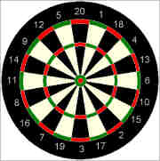
The dartboard pattern has rotational symmetry of Order 10
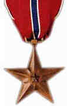
The US Bronze Star Medal has Order 5
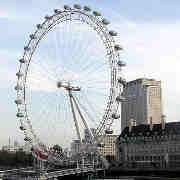
The London Eye has Order ... oops, I lost count!